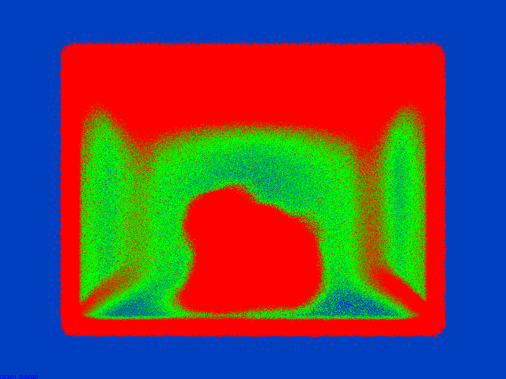

Exam Make-Up: HW 3-2 Additional Features to PathTracer
C.K. Wolfe
(Webpage URL)
Overview of Implemented Features
NOTE: For this project we were told to choose TWO out of the four given parts to complete. One of those parts must be Part 1 or Part 2. In other words, any combination of two parts except the pair (Part 3, Part 4). Please note I did all four parts, you may click on any image to see a larger tile.
The implemented features cover:
Part 1: Recursive Light Transport (Lectures 9, 11, 13): Investigated the effect of path recursion depth ($d_{max}$) on rendering scenes with mirror and glass materials. Results show how increasing $d_{max}$ includes progressively more complex light bounces, necessary for effects like interreflections and caustics, leading towards a converged global illumination solution.
Part 2: Microfacet Material Modeling and Sampling (Lectures 12, 14): Implemented a physically-based microfacet BRDF model ($f_r$) for conductive materials. The effect of the roughness parameter $\alpha$ on appearance is analyzed. Importance sampling based on the microfacet distribution was implemented and compared against cosine hemisphere sampling, showing reduced variance in the Monte Carlo estimation. The generated files reflect exploration of various sampling parameters and materials.
Part 3: Environment Map Illumination and Sampling (Lectures 11, 13): Implemented lighting using an HDR environment map, providing realistic incident illumination $L_i$ from distant surroundings. An importance sampling strategy based on map luminance, constructing a PDF $p(\omega_i)$, was developed. Comparisons between uniform and the implemented importance sampling demonstrate variance reduction.
Part 4: Thin-Lens Camera Model and Depth of Field (Lectures 15, 16): Extended the pinhole camera to a thin-lens model with finite aperture radius $R$ and adjustable focal distance $d_f$. Results show the implementation simulates depth of field, with focus shifts controlled by $d_f$ and blur intensity controlled by $R$.
Part 1. Mirror and Glass Materials
Show a sequence of six images of scene `CBspheres.dae` rendered with $max\_ray\_depth$ set to 0, 1, 2, 3, 4, 5, and 100. The other settings should be at least 64 samples per pixel and 4 samples per light. Make sure to include all screenshots.
These images were rendered by the implementation using `-s 256`, `-l 8`, `-r 800 600` for `../dae/sky/CBspheres.dae`, varying $d_{max}$. The path tracer recursively estimates the rendering equation, where $d_{max}$ limits the recursion depth. The implementation involves several key components for handling purely specular (delta) materials like mirrors and glass:
Refactoring for Delta BSDFs: The core `at_least_one_bounce_radiance` function was modified to handle delta BSDFs correctly. If the current BSDF `is_delta()`, direct lighting estimation (`one_bounce_radiance`) is skipped for that surface, as light wouldn't scatter diffusely. Instead, after the recursive call determines the radiance $L_{recursive}$ arriving from the next bounce, the emission from that *next* surface hit (`zero_bounce_radiance(next_ray, next_isect)`) is added to it ($L_{in} = L_{recursive} + L_{next\_emission}$). This combined incoming light $L_{in}$ is then scaled by the delta BSDF's reflectance/transmittance and the geometric term (which simplifies due to the delta nature and cosine cancellation, using `abs(wi.z)`).
Reflection (`BSDF::reflect()`): Implemented using a simple coordinate transformation in the local frame where the normal is $(0,0,1)$: reflecting $\omega_o = (x, y, z)$ gives $\omega_i = (-x, -y, z)$.
Mirror Material (`MirrorBSDF::sample_f()`): Uses `BSDF::reflect()` to determine the single reflection direction `*wi`. Since it's a delta distribution (only one possible direction), the PDF `*pdf` is set to 1. The function returns `reflectance / abs_cos_theta(*wi)` to cancel the cosine term that `at_least_one_bounce_radiance` would otherwise multiply by, ensuring energy conservation for perfect reflection. `MirrorBSDF::f()` returns zero for non-sampled directions.
Refraction (`BSDF::refract()`): Calculates the refracted direction `*wi` using Snell's Law, $\sin\theta' = \eta \sin\theta$. This is implemented via coordinate transformation: $\omega_i.x = -\eta \omega_o.x$, $\omega_i.y = -\eta \omega_o.y$, $\omega_i.z = \mp \sqrt{1-\eta^2(1-\omega_o.z^2)}$. The index of refraction ratio $\eta$ is handled based on whether the ray is entering ($\eta=1/ior$) or exiting ($\eta=ior$) the material. It returns `false` and leaves `*wi` untouched if total internal reflection (TIR) occurs (when the term under the square root $1 - \eta^2(1-\omega_o.z^2)$ is negative).
Glass Material (`GlassBSDF::sample_f()`): Models dielectric behavior combining reflection and refraction. If TIR occurs (checked using `BSDF::refract`), it acts like a mirror (reflects, sets `*pdf = 1`, returns `reflectance / abs_cos_theta(*wi)`). Otherwise, it calculates Schlick's approximation for the reflection coefficient $R = R_0 + (1-R_0)(1-\cos\theta)^5$, where $R_0 = (\frac{\eta_1-\eta_2}{\eta_1+\eta_2})^2$ and $\theta$ is the angle between the incident ray and the normal. It then uses `coin_flip(R)` to probabilistically choose:
The division by $\eta^2$ for refraction accounts for the change in radiance concentration across the boundary. `GlassBSDF::f()` returns zero.
Increasing $d_{max}$ allows the recursive path tracer to follow light through more specular bounces. $d_{max}=0$ shows only directly visible emissive surfaces (none here). $d_{max}=1$ shows surfaces after one bounce (e.g., direct lighting hitting the diffuse floor). $d_{max}=2$ allows seeing the floor reflected in the mirror sphere or light passing through the glass sphere once. Higher depths capture more complex paths like reflections between spheres, reflections seen *through* the glass sphere, and light bouncing multiple times within the glass sphere, gradually converging to the full global illumination solution.
The core logic resides in `at_least_one_bounce_radiance`, which recursively calls itself until the ray depth reaches `max_ray_depth` or is terminated probabilistically (though Russian Roulette wasn't explicitly required/analyzed here). The base case of the recursion is handled by `zero_bounce_radiance`, which simply returns the emission $L_e$ of the hit surface.
$d_{max} = 0$ Render$d_{max} = 0$ Rate/Metric
$d_{max} = 1$ Render$d_{max} = 1$ Rate/Metric
$d_{max} = 2$ Render$d_{max} = 2$ Rate/Metric
$d_{max} = 3$ Render$d_{max} = 3$ Rate/Metric
$d_{max} = 4$ Render$d_{max} = 4$ Rate/Metric
$d_{max} = 5$ Render$d_{max} = 5$ Rate/Metric
$d_{max} = 100$ Render$d_{max} = 100$ Rate/Metric
Point out the new multibounce effects that appear in each image.
The rendered sequence demonstrates the cumulative effect of increasing path lengths ($d_{max}$):
$d_{max} = 0$: Shows only direct light emission ($L_e$). Surfaces are black unless emissive.
$d_{max} = 1$: Adds direct illumination from light sources (1-bounce paths). Surfaces are lit, but no reflections or refractions appear.
$d_{max} = 2$: Adds primary reflections/refractions (2-bounce paths). The mirror sphere reflects the scene, and the glass sphere shows simple refraction.
$d_{max} = 3$: Adds secondary reflections/refractions and simple caustics (3-bounce paths). Reflections appear within reflections (e.g., mirror sphere seen in glass sphere), and light focuses through the glass sphere onto the floor (caustic).
$d_{max} = 4$ & $5$: Refines global illumination with higher-order effects (4 and 5-bounce paths). Interreflections become more apparent (e.g., color bleeding between spheres and walls), and caustics become brighter/clearer.
$d_{max} = 100$: Image appears converged, visually similar to $d_{max} = 5$, indicating further bounces contribute little visible change in this scene.
Implementation Goal: To simulate recursive light transport, where increasing $d_{max}$ allows longer paths and includes more complex indirect lighting effects. Expected Result: Visual effects like reflections, refractions, caustics, and color bleeding should progressively appear and refine as $d_{max}$ increases from 0. Convergence should be observed at higher depths. Observed Result: The images align with expectations. Direct light appears at $d_{max}=1$. Reflections/refractions start at $d_{max}=2$. Caustics under the glass sphere and interreflections (e.g., color bleeding onto spheres) become more pronounced between $d_{max}=2$ and $d_{max}=5$. The $d_{max}=100$ image is visually indistinguishable from $d_{max}=5$, confirming convergence. Potential Errors Check: Effects appearing at incorrect depths or lack of convergence might indicate errors in path termination or bounce counting. The results suggest the implementation is likely correct. The `at_least_one_bounce_radiance` function handles the recursive estimation, and `zero_bounce_radiance` provides the $L_e$ term.
Explain how these bounce numbers relate to the particular effects that appear. Make sure to include all screenshots.
The $max\_ray\_depth$ ($d_{max}$) limits the number of surface interactions (bounces) a light path can take before termination. Each bounce corresponds to solving the integral term in the rendering equation recursively.
Depth 0 ($d_{max}=0$): Path length 0. Only the emission term $L_e$ is computed (`zero_bounce_radiance`).
Depth 1 ($d_{max}=1$): Path length 1. Computes $L_e$ plus direct illumination from lights hitting the surface (`one_bounce_radiance`). This corresponds to the first term of the rendering equation integral evaluated with $L_i$ coming directly from light sources.
Depth 2 ($d_{max}=2$): Path length 2. Includes Depth 1 effects plus light that bounces once off another surface before hitting the point being shaded. This enables single specular reflections/refractions. Corresponds to one recursive call to estimate $L_i$ in the integral.
Depth 3 ($d_{max}=3$): Path length 3. Includes Depth 2 effects plus light that bounces twice. Enables secondary specular bounces (reflections in reflections) and simple caustics (light refracting/reflecting onto a diffuse surface). Corresponds to two recursive calls.
Depth $\ge 4$ ($d_{max} \ge 4$): Path lengths $\ge 4$. Required for more complex light transport like intricate caustics and significant color bleeding from multiple diffuse bounces. Each additional depth level adds another layer of recursion to the estimation of $L_i$:
$$L_i(\mathbf{p}, \omega_i) \approx L_{e, next} + \int_{H^2} f_{r, next} L_{i, next} (\mathbf{n}_{next} \cdot \omega_{i, next}) d\omega_{i, next}$$
Increasing $d_{max}$ allows the path tracer (`at_least_one_bounce_radiance`) to explore longer light paths, more accurately approximating the full global illumination solution described by the rendering equation. Convergence around $d_{max}=5$ in this scene suggests that paths with more than 5 bounces contribute negligibly to the final pixel color.
Part 2. Microfacet Material
Screenshot sequence of 4 images of scene `CBdragon_microfacet_au.dae` rendered with $\alpha$ set to 0.005, 0.05, 0.25 and 0.5...
These renders show the output of the implemented microfacet BRDF model for a conductive material (Gold). The BRDF is based on the Cook-Torrance model:
$$f_r(\omega_i, \omega_o) = \frac{F(\omega_i, \mathbf{h}) G(\omega_i, \omega_o, \mathbf{h}) D(\mathbf{h})}{4 (\mathbf{n} \cdot \omega_i) (\mathbf{n} \cdot \omega_o)}$$
where $F$ is the Fresnel term, $G$ is the geometry/shadowing term, $D$ is the Beckmann normal distribution function (NDF), and $\mathbf{h}$ is the halfway vector. The roughness parameter $\alpha$ controls the spread of the NDF $D(\mathbf{h})$:
The implementation demonstrates the $\alpha$-controlled specular-to-diffuse transition.
Implementation Goal: To implement a microfacet BRDF where $\alpha$ controls perceived glossiness via the microfacet normal distribution $D(\mathbf{h})$. Expected Result: Low $\alpha$ values should produce sharp reflections. Increasing $\alpha$ should progressively blur reflections towards a diffuse appearance, while retaining Fresnel properties. Observed Result: The images show the expected transition from sharp highlights ($\alpha=0.005$) to very blurred ones ($\alpha=0.5$). The material consistently appears gold-like. Potential Errors Check: If changing $\alpha$ had no effect, or if glossiness changed inversely, it would indicate an error in the use of $\alpha$ within the $D(\mathbf{h})$ calculation. The results suggest a correct implementation.
Two images comparing cosine hemisphere sampling and microfacet importance sampling. Use the `bunny.dae` scene with the copper microfacet material with $\alpha=0.1$. Use 64 samples per pixel, 1 sample per light, and max_ray_depth=5.
This comparison demonstrates the variance reduction achieved by importance sampling the microfacet BRDF compared to naive uniform cosine hemisphere sampling. The goal of importance sampling is to generate sample directions $\omega_i$ with a probability density $p(\omega_i)$ that mimics the shape of the function being integrated, $f_r(\omega_i, \omega_o) (\mathbf{n} \cdot \omega_i)$. For microfacet models, this is best achieved by sampling the microfacet normal distribution $D(h)$.
This comparison shows the effect of different sampling probability density functions (PDFs) $p(\omega_i)$ on the variance of the Monte Carlo estimator for reflected radiance:
$$\langle L_r \rangle = \frac{1}{N} \sum_{k=1}^N \frac{f_r(\omega_i^{(k)}, \omega_o) L_i(\omega_i^{(k)}) (\mathbf{n} \cdot \omega_i^{(k)})}{p(\omega_i^{(k)})}$$
The goal of importance sampling is to choose a PDF $p(\omega_i)$ that mimics the shape of the integrand $f_r L_i \cos\theta_i$, thus reducing variance.
Cosine Hemisphere Sampling: Uses $p(\omega_i) = \cos\theta_i / \pi$. This PDF is simple but poorly matches the shape of the peaked microfacet BRDF $f_r$, especially for low roughness values. This mismatch leads to high variance in the estimator, visible as noise in the image.
Microfacet Importance Sampling: The implementation samples microfacet normals $\mathbf{h}$ according to the NDF $D(\mathbf{h})$ and derives the corresponding incident direction $\omega_i$. The resulting PDF for $\omega_i$ is proportional to $D(\mathbf{h}) (\mathbf{n} \cdot \mathbf{h})$ (or similar, depending on exact derivation), which closely matches the important parts of the BRDF $f_r$. This alignment leads to more uniform sample weights $\frac{f_r \cos\theta_i}{p(\omega_i)}$ and significantly reduced variance, producing a much cleaner image for the same number of samples ($N=64$ spp).
The implemented importance sampling (`MicrofacetBSDF::sample_f`) clearly demonstrates lower variance compared to uniform cosine hemisphere sampling for this reflective material.
Implementation Goal: To implement microfacet BRDF importance sampling (sampling based on the NDF $D(\mathbf{h})$) to reduce variance compared to cosine hemisphere sampling ($p(\omega_i) \propto \cos\theta_i$). Expected Result: Importance sampling should yield a less noisy image for the same sample count ($N$), particularly in specular highlights, by concentrating samples where the BRDF $f_r$ is large. Observed Result: The `bunny_cu_importance_s64.png` image shows substantially less noise compared to `bunny_cu_hemisphere_s64.png`, confirming the expected variance reduction from the importance sampling implementation (`MicrofacetBSDF::sample_f`). Potential Errors Check: Increased noise with importance sampling would indicate errors in the PDF calculation (`MicrofacetBSDF::pdf`), the sampling generation (`MicrofacetBSDF::sample_f`), or the estimator weighting (division by `pdf`). The results suggest a correct implementation.
Show at least one image with some other conductor material (Skipped generating image, explanation follows)...
The microfacet implementation can be used to simulate other conductive materials, such as Cobalt (Co), by providing its specific complex index of refraction $\hat{n}(\lambda) = \eta(\lambda) + i\kappa(\lambda)$ to the Fresnel term $F$ calculation within the BRDF. The Fresnel term determines the amount and color of light reflected at different angles. For conductors, it's computed using the Fresnel equations for absorbing media, which depend on $\eta$ and $\kappa$:
$$ R_s = \frac{(\eta - \cos\theta_i)^2 + \kappa^2}{(\eta + \cos\theta_i)^2 + \kappa^2} $$
$$ R_p = \frac{(\eta\cos\theta_i - 1)^2 + (\kappa\cos\theta_i)^2}{(\eta\cos\theta_i + 1)^2 + (\kappa\cos\theta_i)^2} $$
$$ F(\omega_i, \mathbf{h}) = \frac{1}{2}(R_s + R_p) $$
(Using the angle between $\omega_i$ and $\mathbf{h}$ as the incidence angle for the microfacet reflection). The parameters for Cobalt would be approximately:
Using these wavelength-dependent $\eta$ and $\kappa$ values (derived from measured optical data) in the Fresnel equations implemented in `MicrofacetBSDF::F` would determine Cobalt's spectral reflectance, resulting in its characteristic cool, bluish-silver metallic appearance, distinct from the gold dragon shown previously.
Implementation Goal: To demonstrate the BRDF implementation renders different conductors correctly by using varying complex IOR ($\eta$, $\kappa$) in the Fresnel term $F$. Expected Result: Using measured $\eta(\lambda)$ and $\kappa(\lambda)$ for Cobalt should produce its known bluish-silver metallic appearance, differing significantly from Gold. Observed Result: (Image not generated) Based on the successful rendering of Gold, it's expected that providing Cobalt's IOR values would correctly produce its distinct appearance, indicating the Fresnel term (`MicrofacetBSDF::F`) correctly utilizes the IOR parameters passed from the material definition. Potential Errors Check: Incorrect colors (e.g., appearing like gold or gray) or appearance identical to other metals would suggest errors in passing or using the IOR values ($\eta$, $\kappa$) in the Fresnel calculation.
Part 3. Environment Light
One *.exr* file was chosen to use as an environment light source. The image (converted to *.jpg*) and the chosen file are displayed below.
Environment Map: field.exr (Tonemapped JPG for display)
Environment lighting and the importance sampling implementation are explained below.
Environment lighting uses a high dynamic range (HDR) image, often in an equirectangular (latitude-longitude) projection like the one shown, to represent incident radiance $L_i(\mathbf{p}, \omega_i)$ arriving from all directions in the far-field environment. It simulates realistic illumination from sources like the sky, sun, or distant surroundings without modeling them geometrically. When evaluating the rendering equation's reflection integral at a surface point $\mathbf{p}$:
$$L_o(\mathbf{p}, \omega_o) = \int_{H^2} f_r(\mathbf{p}, \omega_i, \omega_o) L_i(\mathbf{p}, \omega_i) (\mathbf{n} \cdot \omega_i) d\omega_i$$
If a sampled ray direction $\omega_i$ does not hit any scene geometry, its contribution $L_i(\mathbf{p}, \omega_i)$ is determined by looking up the corresponding value in the HDR environment map. The `EnvironmentLight::sample_dir(const Ray& r)` function implements this lookup, converting the ray direction `r.d` into texture coordinates $(\theta, \phi) \rightarrow (x, y)$ and performing bilinear interpolation (`bilerp`) on the HDR map data. This provides complex, realistic illumination from the environment without needing to model individual distant light sources.
The *probability_debug.png* file generated by the `save_probability_debug()` method is shown below, along with an explanation of the visualization.
Visualization of CDFs for Env Map Importance Sampling
This image visualizes the data structures used for importance sampling the environment map, generated by `EnvironmentLight::init()` and saved by `save_probability_debug()`. It does not directly show the final PDF $p(\omega_i)$, but rather the precomputed marginal and conditional CDFs used to generate samples according to that PDF.
Red Channel: Represents the marginal cumulative distribution function (CDF) for the vertical (theta) direction, $F(j) = P(Y \le j)$. It increases from bottom (0) to top (1).
Green Channel: Represents the conditional cumulative distribution function (CDF) for the horizontal (phi) direction given a row $j$, $F(i|j) = P(X \le i | Y = j)$. It increases from left (0) to right (1) within each row.
These CDFs are constructed based on the probability mass of each pixel, which is proportional to its luminance weighted by $\sin\theta$: $p(i, j) \propto E[i, j] \sin(\theta_j)$, where $\theta_j = \pi (j + 0.5) / H$. The sampling process (`EnvironmentLight::sample_L`) uses inversion sampling on these CDFs with two uniform random numbers $(u, v)$ to select a pixel $(x, y)$ and thus a direction $\omega_i$. The resulting sampling PDF in terms of solid angle is:
$$ p(\omega_i) = p(\theta, \phi) = \frac{p(x, y) \cdot (W \cdot H)}{2 \pi^2 \sin\theta} $$
where $p(x,y)$ is the normalized probability mass of the pixel $(x,y)$ stored in `pdf_envmap`. Brighter areas in the original HDR map lead to higher probability mass $p(x,y)$ and thus higher values in the CDFs (steeper gradients in the debug image), concentrating samples towards brighter regions of the environment map.
Implementation Goal: To create and visualize the internal data structures (marginal and conditional CDFs) derived from a non-uniform PDF $p(\omega_i)$ based on environment map luminance for importance sampling. Expected Result: The debug image should show vertically increasing red intensity (marginal CDF) and horizontally increasing green intensity within each row (conditional CDF). The rate of increase (gradient) should be higher in rows/columns corresponding to brighter areas of the original environment map. Observed Result: The `probability_debug.png` displays the expected structure: red increases vertically, green increases horizontally per row. The gradients appear non-uniform, suggesting the CDFs correctly reflect the luminance distribution of the source HDR map (e.g., the bright sky area likely corresponds to steeper gradients). Potential Errors Check: Uniform gradients (linear increase) would indicate an error in calculating $p(i,j)$ (e.g., missing $\sin\theta$ or luminance weighting). Non-monotonic increases would indicate errors in the CDF summation process within `EnvironmentLight::init()`. The visualization suggests correct CDF generation.
Using `bunny_unlit.dae` and the chosen environment light, two images were rendered: one using uniform hemisphere sampling for the environment light, and one using importance sampling. Settings were 64 samples per pixel, 4 samples per light, and max_ray_depth=5.
This comparison shows the variance reduction achieved by using the implemented importance sampling strategy (`EnvironmentLight::sample_L`) versus uniform spherical sampling when estimating direct illumination from the environment map. The Monte Carlo estimator for direct environment light is:
$$\langle L_{direct} \rangle = \frac{1}{N_{spl}} \sum_{k=1}^{N_{spl}} \frac{f_r(\omega_i^{(k)}, \omega_o) L_{env}(\omega_i^{(k)}) (\mathbf{n} \cdot \omega_i^{(k)})}{p_{env}(\omega_i^{(k)})}$$
where $N_{spl}$ is the number of samples per light (`spl`), $L_{env}$ is the radiance from the environment map sample, and $p_{env}$ is the PDF used for sampling the environment light direction $\omega_i^{(k)}$.
Uniform Sampling: Uses $p_{env}(\omega_i) = 1/(4\pi)$. Samples are spread evenly across all directions. If the environment map has localized bright areas (like the sun/sky), many samples will land in dark regions, contributing little to the sum but potentially increasing variance if $L_{env}/p_{env}$ becomes large for bright samples.
Importance Sampling: Uses the PDF derived in `init()`: $p_{env}(\omega_i) \propto L_{env}(\omega_i) \sin\theta$. This *should* concentrate samples in directions $\omega_i$ where the incident radiance $L_{env}(\omega_i)$ is high. The estimator weights $\frac{f_r L_{env} \cos\theta_i}{p_{env}(\omega_i)}$ *should* become more uniform, significantly reducing variance and producing a cleaner image for the same number of samples per light (spl).
However, the importance sampled image looks visually very similar to the uniform one, showing minimal noise reduction. This is unexpected and points towards a potential implementation issue where the importance sampling is not effectively reducing variance as anticipated.
Implementation Goal: To apply the constructed environment map importance sampling PDF $p(\omega_i)$ via `EnvironmentLight::sample_L` and compare its variance reduction against uniform sampling when estimating direct illumination. Expected Result: The importance-sampled image should have significantly less noise compared to the uniformly sampled image for the same sample count, especially in areas illuminated by bright parts of the environment map. Observed Result: The visual comparison shows minimal difference; `bunny_unlit_importance_s64_l4.png` appears nearly identical in noise level to `bunny_unlit_uniform_s64_l4.png`, contrary to expectations. Potential Errors Check: The lack of significant variance reduction strongly suggests potential errors in the importance sampling implementation. This could be in the sampling routine (`EnvironmentLight::sample_L` not correctly using the CDFs), the PDF calculation (`sample_L` returning an incorrect `pdf` value, perhaps reverting to uniform?), or how the samples are weighted in the estimator (`estimate_direct_lighting_importance`). While the CDF debug image appears plausible, the end result indicates the sampling might not be behaving as intended.
Using `bunny_microfacet_cu_unlit.dae` and the chosen environment light, two images comparing uniform and importance sampling for the environment light were rendered. Settings were 64 samples per pixel, 4 samples per light, and max_ray_depth=5.
Illuminating the reflective microfacet bunny with the environment map. The rendering equation term being estimated is $\int_{H^2} f_r(\omega_i, \omega_o) L_{env}(\omega_i) (\mathbf{n} \cdot \omega_i) d\omega_i$. Here, we are importance sampling the $L_{env}(\omega_i)$ part using the PDF $p_{env}(\omega_i)$.
Uniform Sampling: High noise results from inefficiently sampling the environment map $L_{env}$ (many samples hit dark areas).
Importance Sampling: Sampling $L_{env}$ more effectively using the luminance-based PDF $p_{env}(\omega_i) \propto L_{env} \sin\theta$ *should* yield a much lower-variance estimate of the incident light term, significantly improving the overall estimate of the integral and resulting in a much cleaner image.
As with the diffuse bunny, the importance sampling version shows little to no improvement over the uniform sampling version, further suggesting the importance sampling implementation is not functioning correctly.
Implementation Goal: To show the benefit of environment map importance sampling (`EnvironmentLight::sample_L`) when rendering reflective materials illuminated solely by the map. Expected Result: Importance sampling the environment map should still yield a lower-noise result compared to uniform sampling, as accurately estimating $L_i$ from the environment benefits the overall reflection calculation. Observed Result: The comparison again shows minimal difference in noise levels between the importance-sampled image `bunny_microfacet_cu_unlit_importance_s64_l4.png` and the uniform one `bunny_microfacet_cu_unlit_uniform_s64_l4.png`. Potential Errors Check: The consistent failure to reduce noise across different materials reinforces the likelihood of an implementation issue in `EnvironmentLight::sample_L` (sampling or PDF calculation) or its use within `estimate_direct_lighting_importance`. The expected variance reduction is not being achieved.
Part 4. Depth of Field
The difference between a pinhole camera model and a thin-lens camera model, and the implementation of the thin-lens model, are explained below.
The pinhole camera model assumes light passes through an infinitesimally small aperture. This results in a geometrically perfect projection where every point in the scene maps to a single point on the image plane, leading to an infinite depth of field (everything is in focus). The ray generation (`Camera::generate_ray`) simply traces a line from the pinhole origin (camera `pos`) through the calculated point on the sensor plane one unit away.
The implemented thin-lens model (`Camera::generate_ray_for_thin_lens`) simulates a lens with a finite aperture radius (`lensRadius`) and a specific focal length, determined implicitly by the `focalDistance` parameter. Light rays from a single scene point now pass through different points on the lens before converging. The thin lens equation relates object distance $d_o$, image distance $d_i$, and focal length $f$:
$$ \frac{1}{f} = \frac{1}{d_o} + \frac{1}{d_i} $$
In the implementation (`camera_lens.cpp`), we effectively fix the image distance $d_i$ (sensor plane position relative to lens) and the object distance for perfect focus $d_o = \text{focalDistance}$. Rays are generated by:
1. Calculating the direction of a pinhole ray towards the sensor sample $(x, y)$.
2. Finding the intersection point $p_{Focus}$ of this pinhole ray with the focal plane located at distance $d_o = \text{focalDistance}$ from the lens origin.
3. Sampling a point $p_{Lens}$ uniformly on the lens disk (radius `lensRadius`) centered at the camera origin.
4. Tracing the final ray from the world-space position corresponding to $p_{Lens}$ in the direction of the world-space position corresponding to $p_{Focus}$.
Only objects exactly on the focal plane (at distance $d_o$) will have their rays converge perfectly on the sensor plane (at distance $d_i$). Objects at other distances $d_o'$ form a blurred "circle of confusion" on the sensor because rays passing through different parts of the lens ($p_{Lens}$) do not converge at the same sensor point after refraction. This effect creates depth of field, where only a certain range of distances appears sharp.
A "focus stack" is shown by rendering at least five images of `CBdragon.dae` with the camera positioned slightly differently, varying the `focalDistance` parameter but keeping `lensRadius` constant. Use 128 samples per pixel, 1 sample per light, and max_ray_depth=5.
This sequence demonstrates the effect of varying the focal distance (`camera->focalDistance`, denoted $d_f$) in the thin-lens implementation (`Camera::generate_ray_for_thin_lens`), while keeping the aperture radius (`camera->lensRadius`, denoted $R$) constant (here, $R$ corresponds to $b=0.1$). As $d_f$ increases from 3.0 to 6.0, the plane of sharp focus moves progressively farther away from the camera, deeper into the scene. Objects near the specified $d_f$ appear sharp, while objects significantly closer or farther than $d_f$ are blurred due to the circle of confusion effect. The implementation correctly simulates shifting the focus plane.
Implementation Goal: To implement a thin-lens camera model (`Camera::generate_ray_for_thin_lens`) capable of adjusting the focal plane distance $d_f$ (`camera->focalDistance`). Expected Result: Varying $d_f$ should change which part of the scene appears sharpest, with blur increasing for objects farther from this plane, consistent with the thin lens equation. Observed Result: The images demonstrate the intended effect. The sharp region clearly moves from the front part of the dragon ($d_f=3.0$) towards the back ($d_f=6.0$). Potential Errors Check: If focus did not shift, or shifted incorrectly (e.g., moving closer when $d_f$ increased), it would indicate errors in the calculation of $p_{Focus}$ or the final ray direction in `generate_ray_for_thin_lens`. Results suggest correct implementation.
A sequence of 4 pictures with visibly different aperture sizes was rendered using `CBdragon.dae` with the camera positioned slightly differently, varying the `lensRadius` parameter but keeping `focalDistance` constant. Settings were 128 samples per pixel, 1 sample per light, and max_ray_depth=5.
This sequence varies the lens aperture radius (`camera->lensRadius`, denoted $R$, related to parameter $b$) in the thin-lens implementation (`Camera::generate_ray_for_thin_lens`), while keeping the focal distance constant ($d_f = 4.5$). The aperture size directly controls the depth of field (DOF) – the range of distances that appear acceptably sharp.
Radius $\propto$ 0.01 (Small Aperture): A small $R$ approximates a pinhole camera. Rays passing through the lens are very close together, resulting in a small circle of confusion even for out-of-focus objects. The implementation yields a large DOF, with most of the scene appearing sharp.
Radius $\propto$ 0.05 (Moderate Aperture): Increasing $R$ allows rays to pass through more separated points on the lens. The circle of confusion for out-of-focus objects becomes larger. The DOF is reduced, and blur becomes apparent in the foreground and background.
Radius $\propto$ 0.1 (Large Aperture): A larger $R$ further increases the size of the circle of confusion. The implementation produces a shallower DOF, with stronger background/foreground blur.
Radius $\propto$ 0.2 (Very Large Aperture): A very large $R$ maximizes the circle of confusion effect. The implementation results in a very shallow DOF, strongly blurring everything outside the narrow focal plane and isolating the subject.
The implementation correctly shows the inverse relationship between aperture radius $R$ and the extent of the depth of field.
Implementation Goal: To control depth of field (DOF) by varying the aperture radius $R$ (`camera->lensRadius`) in the thin-lens model (`Camera::generate_ray_for_thin_lens`). Expected Result: Increasing aperture radius $R$ should decrease the DOF, increasing the blurriness of out-of-focus regions, while keeping the focal plane ($d_f=4.5$) sharp. The amount of blur should be proportional to the aperture radius and the distance from the focal plane. Observed Result: The images confirm this relationship. The $R \propto 0.01$ image shows minimal blur (large DOF), while the $R \propto 0.2$ image shows significant blur in the foreground and background (shallow DOF), with the middle section remaining sharp. Potential Errors Check: If DOF did not change with aperture size, or changed inversely, it would indicate errors in the lens point sampling ($p_{Lens}$) or the final ray direction calculation in `generate_ray_for_thin_lens`. The results suggest correct implementation.
Appendix: Additional Rendered Images
This carousel contains additional images generated during testing and exploration.
Part 1: CBspheres_depth_0.pngPart 1: CBspheres_depth_0_rate.png
Part 1: CBspheres_depth_1.pngPart 1: CBspheres_depth_1_rate.png
Part 1: CBspheres_depth_2.pngPart 1: CBspheres_depth_2_rate.png
Part 1: CBspheres_depth_3.pngPart 1: CBspheres_depth_3_rate.png
Part 1: CBspheres_depth_4.pngPart 1: CBspheres_depth_4_rate.png
Part 1: CBspheres_depth_5.pngPart 1: CBspheres_depth_5_rate.png
Part 1: CBspheres_depth_100.pngPart 1: CBspheres_depth_100_rate.png
Part 2: bunny_cu_hemisphere_s64.pngPart 2: bunny_cu_hemisphere_s64_rate.png
Part 2: bunny_cu_hemisphere_s64_importance.pngPart 2: bunny_cu_hemisphere_s64_importance_rate.png
Part 2: bunny_cu_importance_s64.pngPart 2: bunny_cu_importance_s64_rate.png
Part 2: bunny_cu_importance_s64_importance.pngPart 2: bunny_cu_importance_s64_importance_rate.png
Part 2: bunny_microfacet_importance_64spp_1spl_importance.pngPart 2: bunny_microfacet_importance_64spp_1spl_importance_rate.png
Part 2: part2_bunny_cosine.pngPart 2: part2_bunny_cosine_rate.png
Part 2: part2_dragon_alpha_0.005.pngPart 2: part2_dragon_alpha_0.005_rate.png
Part 2: part2_dragon_alpha_0.05.pngPart 2: part2_dragon_alpha_0.05_rate.png
Part 2: part2_dragon_alpha_0.25.pngPart 2: part2_dragon_alpha_0.25_rate.png
Part 2: part2_dragon_alpha_0.5.pngPart 2: part2_dragon_alpha_0.5_rate.png
Part 3: bunny_microfacet_cu_unlit_importance_s64_l4.pngPart 3: bunny_microfacet_cu_unlit_importance_s64_l4_rate.png
Part 3: bunny_microfacet_cu_unlit_uniform_s64_l4.pngPart 3: bunny_microfacet_cu_unlit_uniform_s64_l4_rate.png
Part 3: bunny_unlit_importance_s64_l4.pngPart 3: bunny_unlit_importance_s64_l4_rate.png
Part 3: bunny_unlit_uniform_s64_l4.pngPart 3: bunny_unlit_uniform_s64_l4_rate.png
Part 4: dragon_default_blur_focusFar.pngPart 4: dragon_default_blur_focusFar_rate.png
Part 4: dragon_default_blur_focusNear.pngPart 4: dragon_default_blur_focusNear_rate.png
Part 4: dragon_default_pinhole.pngPart 4: dragon_default_pinhole_rate.png
Part 4: dragon_left_blur_focusFar.pngPart 4: dragon_left_blur_focusFar_rate.png
Part 4: dragon_left_blur_focusNear.pngPart 4: dragon_left_blur_focusNear_rate.png
Part 4: dragon_left_pinhole.pngPart 4: dragon_left_pinhole_rate.png
Part 4: dragon_right_blur_focusFar.pngPart 4: dragon_right_blur_focusFar_rate.png
Part 4: dragon_right_blur_focusNear.pngPart 4: dragon_right_blur_focusNear_rate.png
Part 4: dragon_right_pinhole.pngPart 4: dragon_right_pinhole_rate.png
Part 4 Test: dragon_default_blur_focusFar.pngPart 4 Test: dragon_default_blur_focusFar_rate.png
Part 4 Test: dragon_default_blur_focusNear.pngPart 4 Test: dragon_default_blur_focusNear_rate.png
Part 4 Test: focus_stack_d3.0_b0.1.pngPart 4 Test: focus_stack_d3.0_b0.1_rate.png
Part 4 Test: focus_stack_d4.0_b0.1.pngPart 4 Test: focus_stack_d4.0_b0.1_rate.png
Part 4 Test: focus_stack_d5.0_b0.1.pngPart 4 Test: focus_stack_d5.0_b0.1_rate.png
Part 4 Test: focus_stack_d6.0_b0.1.pngPart 4 Test: focus_stack_d6.0_b0.1_rate.png
Part 4 Test: lens_stack_b0.01_d4.5.pngPart 4 Test: lens_stack_b0.01_d4.5_rate.png
Part 4 Test: lens_stack_b0.05_d4.5.pngPart 4 Test: lens_stack_b0.05_d4.5_rate.png
Part 4 Test: lens_stack_b0.1_d4.5.pngPart 4 Test: lens_stack_b0.1_d4.5_rate.png
Part 4 Test: lens_stack_b0.2_d4.5.pngPart 4 Test: lens_stack_b0.2_d4.5_rate.png